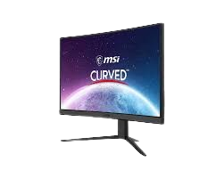

A monitor is a device that displays information in graphic or text form.
Monitor to urządzenie, które wyświetla informacje w formie graficznej lub tekstowej.

| Nazwa |
Rozdzielczość |
Typ |
Kolor |
Cena |
Sklep |
| Monitor MSI G24C4 E2 Curved Gaming |
2560x1440 |
Curved |
Multikolorowe |
529,99 PLN |
MSI |
| Konkuręcja |
| MSI G27CQ4 E2 |
2560x1440 |
Curved |
Multikolorowe |
749,99 PLN |
MSI |
| LG UltraGear 27GS60QC-B |
2560x1440 |
Curved |
Multikolorowe |
649,99 PLN |
LG |
Interesting Facts About Monitors
- The first computer monitors were actually modified oscilloscopes.
- CRT monitors were dominant until the early 2000s when LCD took over.
- OLED monitors offer perfect black levels as each pixel emits its own light.
- Some gaming monitors can have refresh rates of up to 360Hz.
- HDR (High Dynamic Range) technology can display a wider range of colors and brightness.
- Ultrawide monitors with aspect ratios like 21:9 are becoming increasingly popular.
- Some monitors have built-in USB hubs and speakers for added functionality.
Ciekawostki o Monitorach
- Pierwsze monitory komputerowe były w rzeczywistości zmodyfikowanymi oscyloskopami.
- Monitory CRT dominowały do początku lat 2000, kiedy to LCD przejęło rynek.
- Monitory OLED oferują idealne poziomy czerni, ponieważ każdy piksel emituje własne światło.
- Niektóre monitory do gier mogą mieć częstotliwość odświeżania do 360Hz.
- Technologia HDR (High Dynamic Range) może wyświetlać szerszy zakres kolorów i jasności.
- Monitory ultraszerokie o proporcjach takich jak 21:9 stają się coraz bardziej popularne.
- Niektóre monitory mają wbudowane huby USB i głośniki dla dodatkowej funkcjonalności.
More info: Strona cambridge
Wróć